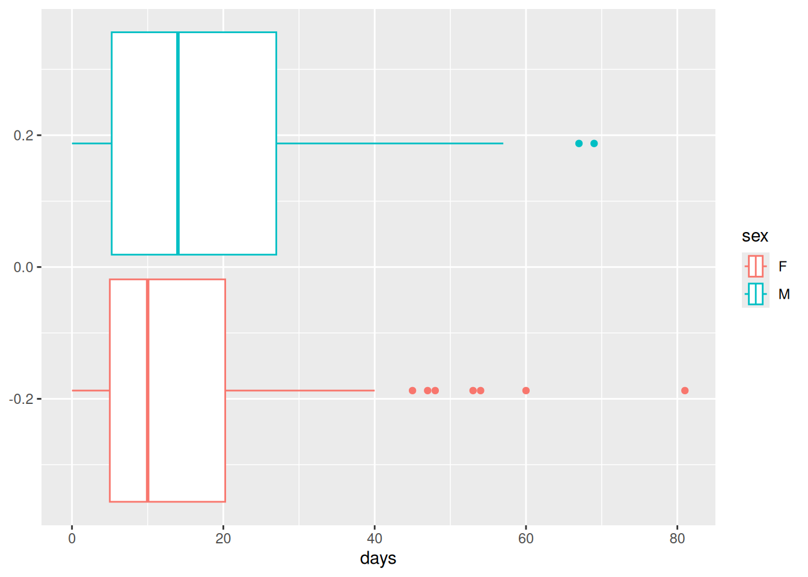
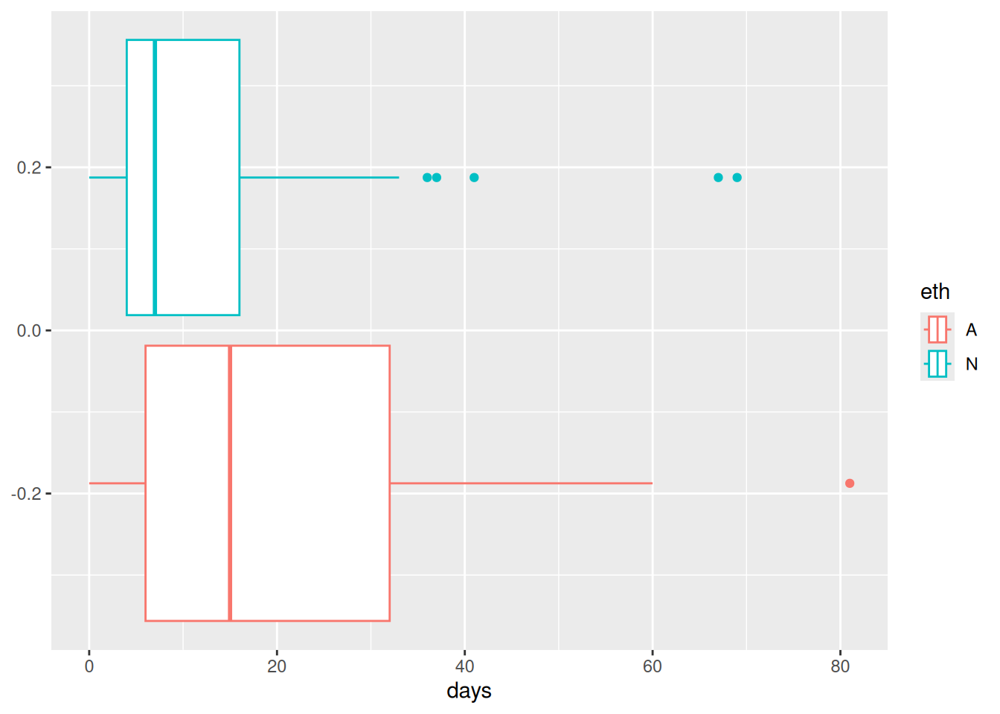
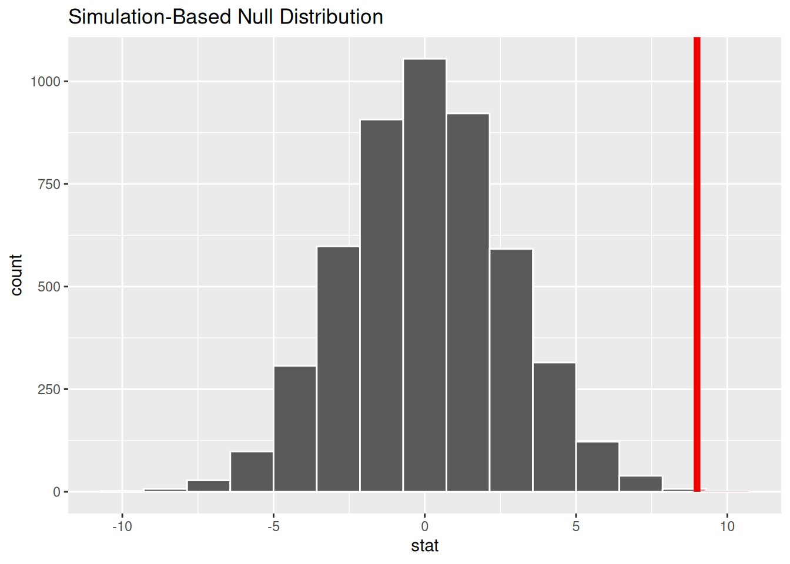

# Automatic car stats
x_1 = 23.7
s_1 = 3.9
n_1 = 25
# Manual car stats
x_2 = 30.9
s_2 = 5.13
n_2 = 25
# Calculate the SE
SE = sqrt(s_1^2/n_1 +s_2^2/n_2)
# Calculate the t_star
t_star = qt(p = 0.005, df = 24, lower.tail = FALSE)Difference of Means
Reading
Side note: prop.test()
There is also a prop.test() function that will test a proportion hypothesis from data based on mathematical formula (as opposed to bootstrapping).
New test: Difference of two means
Another hypothesis test.
Conditions
Distributions
New Standard Error
New df
Conditions
Independence Extended
Normality (no extreme outliers)
Compute the df
with no computer
t - distribution with the smaller of \(n_1-1\) and \(n_2-1\) degrees of freedom.
with R
t - distribution, let R find the degrees of freedom with t.test().
SE
\[ SE = \sqrt{\frac{\sigma^2_1}{n_1}+\frac{\sigma^2_2}{n_2}}\\ \text{or}\\ SE = \sqrt{\frac{s^2_1}{n_1}+\frac{s^2_2}{n_2}} \] We rarely know \(\sigma\) so the second standard error is more often used.
Test Statistic
\[ \text{Test Statisitc} = \frac{\bar{x}_1 - \bar{x}_2 -0}{SE } \]
(It looks just like the difference of proportions, but with means)
Problem number 18
- CI for the difference of means
- Hypothesis Test
Confidence interval 99%
Check independence extended.
No extreme outliers.
Input values & calculate SE
\(\bar{x}_1 - \bar{x}_2 \pm t^* SE\)
Conclusion
We are 99% sure that the true difference in mpg is between 3.6 and 10.8.
#Lower bound
x_1 - x_2 - t_star*SE[1] -10.80477# Upper Bound
x_1 - x_2 + t_star*SE[1] -3.595228Hypothesis test
Conditions are checked and values are input.
Notation:
\[ H_o: \mu_1 = \mu_2\\ H_a: \mu_1 \ne \mu_2\\ \alpha = 0.05 \]
Calculate pvalue
Test statistic:
\[ T = \frac{\bar{x}_1-\bar{x}_2 - 0 }{SE} \]
Test_stat = x_1 - x_2
2*pt(q=Test_stat, df = 24)[1] 1.933053e-07Conclusion:
With a pvalue close to zero we have strong evidence to reject the null hypothesis in favor of the alternative. It seems that the average fuel economy of automatic vs manual cars is different.
It is possible we have made a type 1 error.
example with t.test()
Is there a difference in the absenteeism of students from New South Wales based on reported gender?
absenteeismcheck conditions, make boxplot
write hypothesis
use
t.test( y\~x, alternative= "t", data=)
Solution:
We should first check out absenteeism. ?absenteeism
Independence between and within groups.
check for outliers:
library(tidyverse)── Attaching core tidyverse packages ──────────────────────── tidyverse 2.0.0 ──
✔ dplyr 1.1.4 ✔ readr 2.1.5
✔ forcats 1.0.0 ✔ stringr 1.5.1
✔ ggplot2 3.5.1 ✔ tibble 3.2.1
✔ lubridate 1.9.3 ✔ tidyr 1.3.1
✔ purrr 1.0.2
── Conflicts ────────────────────────────────────────── tidyverse_conflicts() ──
✖ dplyr::filter() masks stats::filter()
✖ dplyr::lag() masks stats::lag()
ℹ Use the conflicted package (<http://conflicted.r-lib.org/>) to force all conflicts to become errorslibrary(openintro)Loading required package: airports
Loading required package: cherryblossom
Loading required package: usdataggplot(data= absenteeism, aes(x=days, color = sex))+
geom_boxplot()
Oh no
Those outliers seem pretty extreme. We should probably not do this test with a math model, like t.test()
Let’s do it anyway for practice
\[ H_o: \mu_1 = \mu_2\\ H_a: \mu_1 \ne \mu_2\\ \alpha = 0.05 \]
t.test(absenteeism$days ~ absenteeism$sex, alternative = "t")
Welch Two Sample t-test
data: absenteeism$days by absenteeism$sex
t = -1.0058, df = 136.35, p-value = 0.3163
alternative hypothesis: true difference in means between group F and group M is not equal to 0
95 percent confidence interval:
-8.096135 2.637044
sample estimates:
mean in group F mean in group M
15.22500 17.95455 You try one
Is there a difference in the absenteeism of students from New South Wales based on ethnicity?
Conditions
Independence
Outliers seem to still be a problem
ggplot(data= absenteeism, aes(x=days, color = eth))+
geom_boxplot()
Doing the test anyway
\[ H_o: \mu_1 = \mu_2\\ H_a: \mu_1 \ne \mu_2\\ \alpha = 0.05 \]
t.test(absenteeism$days~absenteeism$eth, alternative = "t")
Welch Two Sample t-test
data: absenteeism$days by absenteeism$eth
t = 3.4358, df = 126.85, p-value = 0.0007991
alternative hypothesis: true difference in means between group A and group N is not equal to 0
95 percent confidence interval:
3.837747 14.262384
sample estimates:
mean in group A mean in group N
21.23188 12.18182 Do it with a simulation
library(infer)
set.seed(9)
absenteeism_randomization <- absenteeism |>
specify( days ~ eth )|>
hypothesise(null= "independence") |>
generate(reps = 5000, type = "permute")|>
calculate(stat = "diff in means", order = c("A","N"))Visualize and pvalue
The observed difference is \(21.2 - 12.2 \approx 9\)
absenteeism_randomization |>
visualise()+
shade_p_value(obs_stat = 9, direction = "right")
absenteeism_randomization|>
get_p_value(obs_stat = 9, direction = "both")# A tibble: 1 × 1
p_value
<dbl>
1 0.0004